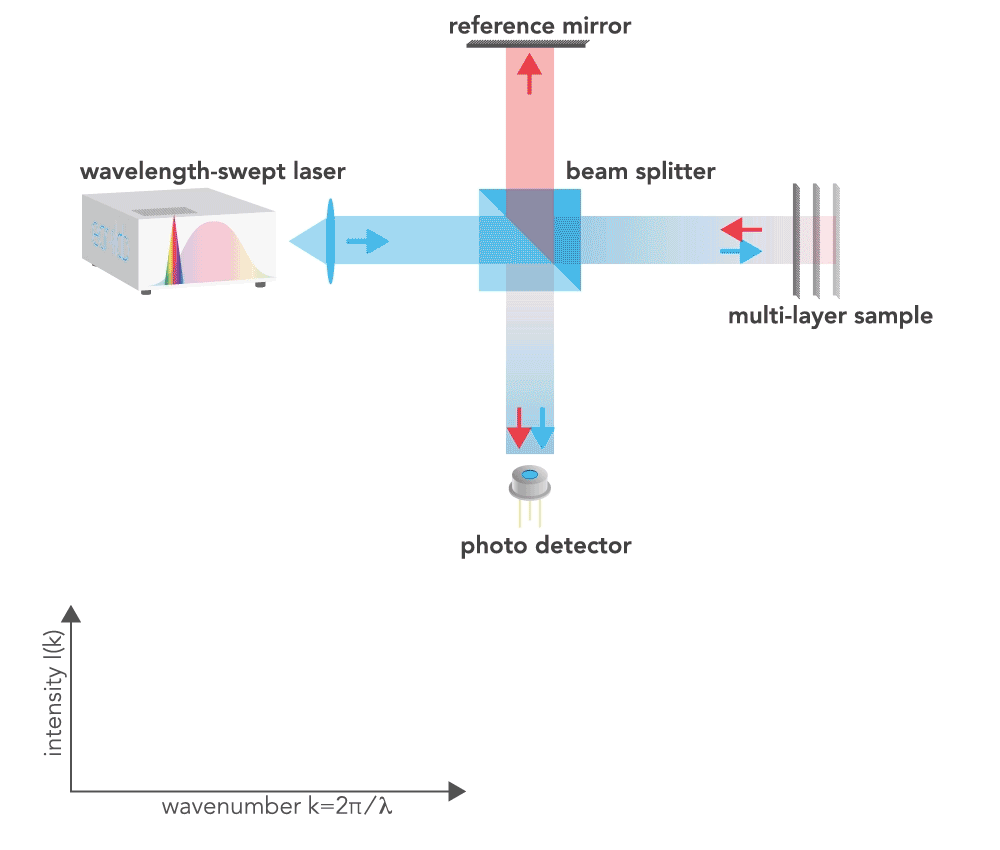
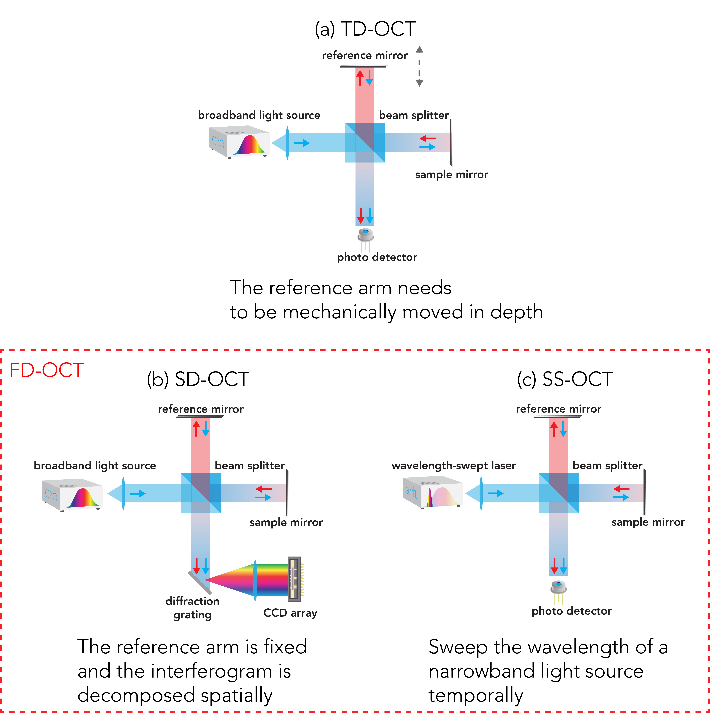

TD-OCT employs this concept and obtains depth information as a function of time by moving a reference mirror with a motorized actuator over the depth range.
The intensity at the output of the interferometer is measured with a photodetector,
while changing the optical path length in the reference arm.
In TD-OCT, interference fringes can only be observed when the relative optical path length difference between the sample (containing objects of interest) and reference arms machetes within the coherence length of light source,
allowing different reflectors to be spatially resolved by translating the reference mirror along the optical axis in TD-OCT.
The envelope of the interference pattern (known as the A-line) represents the depth-resolved optical reflectance of the sample arm at a specific lateral position along its axial direction.
Low coherence light allows for localizing in depth the reflective profiles of the sample.
The back-reflected light from each arm is combined and only interferes if the optical path lengths of reference and sample arms match.
Two (2D) or three-dimensional (3D) cross-sectional images can be constructed by obtaining a set of raster-scanned A-lines along a desired lateral direction.
OCT images are usually displayed in grayscale, where the horizontal axis corresponds to the direction of transverse or lateral scanning,
and the vertical axis corresponds to the direction of axial scanning.
To account for the high dynamic range and speckle noise often present in OCT images,
pixel intensity in an OCT image is typically mapped to the logarithm of the interferogram envelope magnitude which compresses the dynamic range and enhances the image contrast.
The sample beam scans laterally across the sample to generate a cross-sectional view.
In TD-OCT, light is emitted from a broadband source,
such as a superluminescent diode (SLEDs).
The characteristics of the light determine one key OCT performance metric: the axial resolution,
\(\Delta z\), or coherence length, \(l_c\).
Assuming that the spectral distribution of SLEDs is Gaussian, the axial resolution is given by:
where \( \lambda_o \) is the center wavelength, and \( \Delta\lambda \) is the full width at half maximum (FWHM) spectral bandwidth.
As the axial resolution is inversely proportional to the spectral bandwidth,
a broadband source is preferred to achieve a higher axial resolution.
In OCT, the lateral resolution is decoupled from the axial resolution and is governed by its optical design.
The lateral resolution is inversely proportional to the numerical aperture (NA):
\( \Delta y = 1.27 \frac{{\lambda_o}}{NA} \)
Although TD-OCT is simple to construct and offers a long-depth scan range,
TD-OCT suffers from slow imaging acquisition speed and an unfavourable trade-off between imaging depth,
imaging acquisition speed, and sensitivity.
Fourier domain OCT (FD-OCT)
Principle idea of FD-OCT
An alternative solution to TD-OCT is Fourier domain OCT (FD-OCT),
which is used in most modern OCT systems owing to superior acquisition speed and sensitivity.
In TD-OCT, axial detection is performed sequentially through the mechanical translation of the reference mirror whereas FD-OCT samples all axial depths simultaneously,
enabling high sensitivity and fast acquisition. In FD-OCT, a spectral interferogram signal is generated by performing a spectrally resolved measurement of the interference intensity between the light reflected from the sample and light from a fixed reference arm,
as shown in here. The frequency of the cosine term in the interferometric signal, seen in the equation below:
is proportional to the relative path length difference between the reflector in the reference arm and the sample arm.
Meanwhile, the amplitude of the interferometric signal encodes information about the sample reflectivity.
As reflected light from all axial depths in the sample is captured and modulated in the source spectrum,
all the spectral components are captured simultaneously which leads to faster acquisition speed and higher sensitivity as compared to TD-OCT.

Spectrally resolved measurement of the interference intensity between the light reflected from the sample and light from a fixed reference arm, with a wavelength that increases over time,
results in a cosine wave frequency, or interference signal, dependent on depth.
Two Fourier-domain architectures have been developed: spectral-domain OCT (SD-OCT) and swept-source OCT (SS-OCT).
SD-OCT employs the same broadband light source as TD-OCT.
However, instead of using a single detector to capture the entire A-scan,
the spectrum of the interfered light is spatially separated with a diffraction grating and then sampled with a high-speed line camera.
SD-OCT simultaneously illuminates and detects all the spectral channels.
As a result, the signal-to-noise ratio (SNR) is improved in comparison to TD-OCT.
In SD-OCT, the number of resolvable wavelengths determines the maximum scan range (i.e., sensitivity roll-off in depth),
which is mostly dependent on the number of pixels available in the spectrometer (e.g., 512 or 4096).

Instead of spatially decomposing a broadband source with a diffraction gating,
an alternative that achieves a similar effect is to temporally sweep the wavelength of a narrowband source,
a technique called swept source OCT (SS-OCT).
SS-OCT utilises a wavelength-tunable laser to rapidly sweep through a range of wavelengths which allows the spectrum of the interferometer output to be sequentially recorded using a single photodetector.
The interferogram obtained from SS-OCT contains a range of frequencies that correspond to different depths within the tissue being imaged.
Compared to SD-OCT, SS-OCT exhibits reduced detection losses owing to the higher detection efficiency of photodetectors as compared to CCDs.
SS-OCT also make it possible to use balanced detection to remove common-mode interference much more easily than SD-OCT.
Furthermore, SS-OCT offers additional benefits: the narrow linewidth permits a deeper scan range,
the wider bandwidth enables higher axial resolution,
sweep rates can be engineered to be significantly higher than the scan rates of line scan cameras,
and the higher output power enables an improved sensitivity.

.gif)